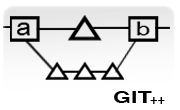

Business analysis
The inital phase will be understanding and writing down your business plan. We make plans based on the insight you give.
a) Insight from your experience working and observing the industry you will enter.
b) Field research which will cover the interview with customers,suppliers,competitors and industry experts. Once the data has been collected, the process of review and creating feedback happens,And we give sugggestion for you, how to building a competitive profile.
The inital phase will be understanding and writing down your business plan. We make plans based on the insight you give.
a) Insight from your experience working and observing the industry you will enter.
b) Field research which will cover the interview with customers,suppliers,competitors and industry experts. Once the data has been collected, the process of review and creating feedback happens,And we give sugggestion for you, how to building a competitive profile.
Technology
We concentrate on providing the design and development services required to create modern cloud and Normal web apps.Core tecnologies we are expert in
PHP : PHP is a widely-used general-purpose server side scripting language,That is especially suited for Web development and can be embedded into HTML. www.php.net
SQL : SQL will be used as language for accessing databases in product.
AJAX : AJAX is a group of client side web development methods used to create asynchronous web applications.
HTML : HTML created in 1980.The markup standard is now advancing to HTML5
We concentrate on providing the design and development services required to create modern cloud and Normal web apps.Core tecnologies we are expert in
PHP : PHP is a widely-used general-purpose server side scripting language,That is especially suited for Web development and can be embedded into HTML. www.php.net
SQL : SQL will be used as language for accessing databases in product.
AJAX : AJAX is a group of client side web development methods used to create asynchronous web applications.
HTML : HTML created in 1980.The markup standard is now advancing to HTML5
Repository
We use GIT as Repository for your project.
Git is a free & open source, distributed version control system designed to handle everything from small to very large projects with speed and efficiency. Git clone is a full-fledged repository with complete history and full revision tracking capabilities, not dependent on network access or a central server
We use GIT as Repository for your project.
Git is a free & open source, distributed version control system designed to handle everything from small to very large projects with speed and efficiency. Git clone is a full-fledged repository with complete history and full revision tracking capabilities, not dependent on network access or a central server

Development and maintenenace of application
We follow scrum model in the project. Best using release to stake holder for feedback in iterative cycles.The key principle of Scrum is its recognition that during a project the customers can change their minds about what they want and need.
We follow scrum model in the project. Best using release to stake holder for feedback in iterative cycles.The key principle of Scrum is its recognition that during a project the customers can change their minds about what they want and need.